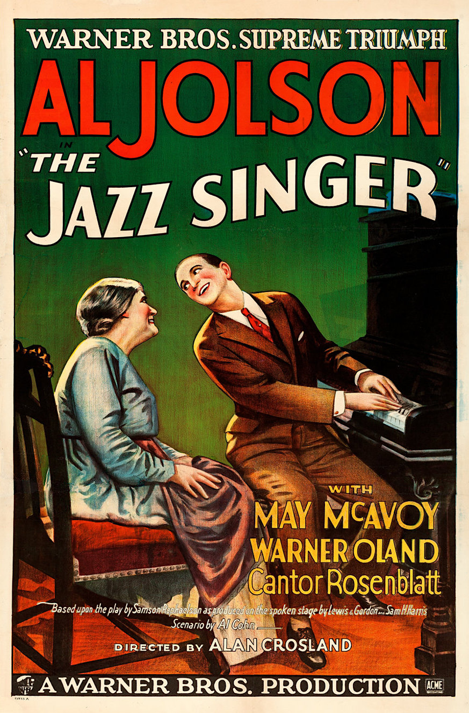

The Jazz Singer
1st Academy Awards
(Oscars 1929)
1 Nomination, 2 Awards
| Nominations | ||
|---|---|---|
| Category | Nominees | Result |
| Writing (Adaptation) | Alfred Cohn | Nominated |
| Special Award | Warner Bros. | Won |